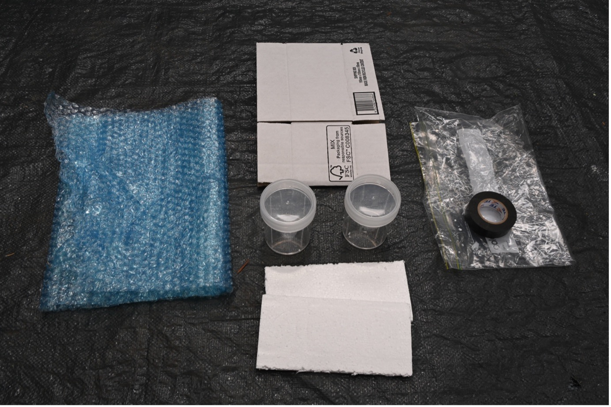

Full Equipment List
Each node/site consists of upto 10 bait hives. The equipment supplied for each node is as follows:
- 10 x assembled 40L nucleus hive boxes with identification labels and warning signage
- 30 x full depth frames and new wax foundation
- 20 x star pickets and mountings for nucleus boxes
- 1 x 200mL swarm lure and sprayer.
- 8 x 250mL plastic sample jars
- 4 x cardboard mailing box (approx 190mm x 100mm x 100mm)
- 4 x return-addressed mailing labels
- electrical tape (sealing/anti-leakage)
- Styrofoam packing
- plastic re-sealable bags
- bubble wrap
- mailing labels and fragile sticker
- 1 x instruction sheet
- 2 litres of ethanol
The equipment in the following diagram is a subset of the list above and is supplied for the purposes of sending samples to the ANU. Each beekeeper will receive an initial allocation sufficient for four tests and return-mail labels to the Mikheyev Lab at the ANU in Canberra.

## Sampling Process We ask that the bait hives examined at least monthly for bee activity, and once a swarm has been detected, it should immediately be sampled and cleared, freeing the box to be re-used for the next potential European honey bee swarm. Be aware that sometimes - particularly at sites located in northern NSW and Queensland - the bait hive may be occupied by Australian native bees of the Tetragonula and Austroplebeia spp. These Australian native social bees are easily distinguised from European Honeybees by their much smaller size. Care should be taken to rehome these colonies. We recommend you get in touch with the local branch of the Australian Native Bee Association for assistance in re-homing these native bee colonies if you are not skilled or equipped to care for them. Sampling will involve the following steps:
- Collect approximately 200-500 workers (about 1 cup).
- Most likely a colony may have occupied a swarm trap for a sufficient time to laydown some comb. If possible, collect two comb samples containing at least 10 pollen and 20 brood cells.
- Using two separate sample jars, fill one sample jar with bees and the other with the honeycomb samples. Cover both samples with the supplied ethanol – usually about 60-80 percent of the volume of the sampling jar. Please only use the supplied ethanol. Do not use methylated spirit as this has additives which may damage the sample.
- Seal each jar with the supplied tape ensuring coverage of the join of the lid around the entire circumference of the sampling container. «insert picture» Packing samples
- Label each jar and the resealable plastic bag with the location code and date
- Wrap the sampling jars in the supplied box using the foam and bubble wrap make a snug fit so the sample jars do not move around inside the cardboard container. «insert picture» Packing samples
- Take the packaged sample to your local Australia Post Office or agent for return to ANU. The packaging container is pre-paid, addressed and labelled appropriately for postal without further input from the participating beekeeper.
After sampling, European honeybee colonies maybe transferred to another hive or euthanised in accordance with NSW DPI procedures.